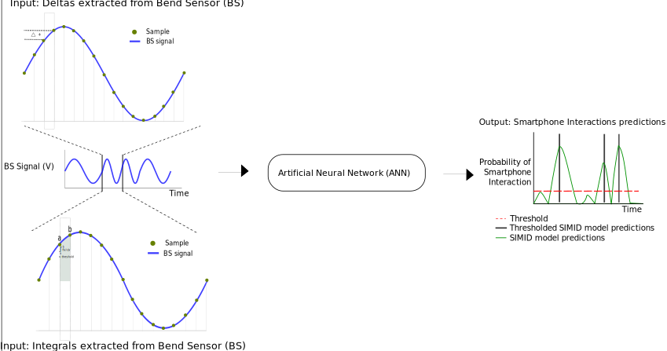
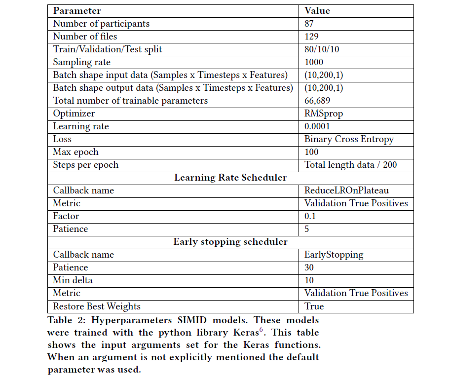

Bendsensor to Tap models¶
This model predicts taps from BS data.
Pre-processing¶
Bendsensor (BS)¶
All the following steps are performed on the pre-processed and aligned BS data. This means that some participants were excluded from the next steps because of unclear BS data.
Extract the deltas. This is done by substracting current sample with previous sample.
Extract the integrals. This is done with the trapezoidal rule.
Remove sequences larger than 10 mins with no taps.
Normalize data. Calculating the z-score of the data in with center 0 and standard deviation 1.
Seperate in multiple ‘windows’ of 10 minutes. During experimental setup participants were switching between apps approximately every 10 mins. This increases the chances that the model will see movements when using most of the different apps.
Downsample BS by a factor of 10.
Smartphone taps¶
All the following steps are performed on the aligned phone taps.
Remove sequences larger than 10 mins with no taps.
Change precision around tap. To decrese imbalance in the data and because tap measurements may be slightly off one tap is padded. This padding is set as at +/- 30.
Seperate in multiple ‘windows’ of 10 minutes.
Downsample taps by a factor of 10.
Training neural network¶
Each window is split with 80% train, 10% validation and 10% test.
The model is trained in batches of shape (samples, sequence length, features). Sample size is 10, Timesteps or sequence length 200 and 1 feature.
The samples are generated through randomly sliced windows. Where the window length are equal to sequence length (Cui, Z., Chen, W., & Chen, Y. (2016). Multi-scale convolutional neural networks for time series classification. arXiv preprint arXiv:1603.06995.) For the validation set, the batch generator did not randomly select a sample. The samples were created based on the sequential input with a stride of 200. For example, the first sample starts at 1 ms up to 200 ms. The second sample 200 ms to 400 ms and so on. This essentially kept the validation data across epochs the same allowing for a direct comparison between the number of true positives in the validation set.
The model is trained with the following architecture:
input_layer = keras.Input((sequence_lengeth ,num_features_bs))
features_3 = keras.layers.Concatenate()([keras.layers.Conv1D(1, i, padding='same')(input_layer) for i in range(1,100)])
lstm1 = keras.layers.Bidirectional(keras.layers.LSTM(128, return_sequences=True))(features_3)
drop_1 = keras.layers.Dropout(0.5)(lstm1)
lstm2 = keras.layers.Bidirectional(keras.layers.LSTM(128, return_sequences=True))(drop_1)
drop_2 = keras.layers.Dropout(0.5)(lstm2)
lstm3 = keras.layers.Bidirectional(keras.layers.LSTM(128, return_sequences=True))(drop_2)
drop_3 = keras.layers.Dropout(0.5)(lstm3)
out = keras.layers.Dense(1, activation='sigmoid')(drop_3)
model = keras.Model(input_layer, [out])
rms_prob_optimizer = tf.keras.optimizers.RMSprop(learning_rate=0.0001)
model.compile(loss='binary_crossentropy', optimizer=rms_prob_optimizer, metrics=['accuracy','TruePositives', 'TrueNegatives', 'FalsePositives', 'FalseNegatives'])
A maximum of 100 epochs was set. However, to avoid overfitting on the training set, early stopping was used. The ANNs were stopped after 30 epochs with no improvement in the number of true positive predictions in the validation set.
The loss function is binary crossentropy and optimizer RMSprop with a learning rate of 0.0001.
The learning rate was adjusted by a factor of 0.1 after no improvement for 5 epochs on the number of true positives in the validation set.
Hyperparameters of model¶
Evaluation¶
The evaluation consists of the following steps:
Calculate precision, recall for every threshold
Calculate F2 score for every threshold
Select threshold that maximizes the F2 score and threshold model predictions
Calculate confusion matrix
Directory structure¶
+-- bs_to_tap
| +-- features --> Scripts to generate the features for training
| | +-- change_sequence_precision.m --> add padding around smartphone taps
| | +-- create_hdf5.m --> creates the h5 data file for training
| | +-- delta_mod.m --> extract deltas from BS data
| | +-- delta_sigma_mod.m --> extract integrals from BS data
| | +-- prepare_features.m --> gets the data in right format for training
| | +-- seperate_sequences.m --> seperates input data into multiple sequences of a chosen length
| +-- training --> Scripts to train the model(s)
| | +-- bs_to_tap.py --> trains the model and saves weights and model structure
| +-- predict --> Scripts to predict the results
| | +-- predictions_bs_to_tap.py --> generate model predictions and save as h5 file
| | +-- read_predictions.m --> reads the predictions from the h5 file
| | +-- save_predictions.m --> save the models predictions in EEGlab struct
Code¶
Features¶
- bs_to_tap.features.change_sequence_precision(Phone, pad_length)¶
The tap measurement may be off by about +/- 10 taps, this function pads the data with this difference
Usage: [decreased_precision_phone] = change_sequence_precision(Phone, pad_length)
- Input(s):
Phone = Phone taps
pad_length = The number of ‘taps’ to be added before and after the real tap
- Output(s):
decreased_precision_phone = Phone taps with the added pad_length around each tap
Author: R.M.D. Kock
- bs_to_tap.features.create_hdf5(EEG, inner_loop_idx, participant, save_path)¶
Create hdf file with data for model training
Usage: create_hdf_MA(EEG, inner_loop_idx, participant, save_path)
- Input(s):
EEG = EEG struct
inner_loop_idx = index in which to add the data in the h5 file
participant = participant folder name and file number (E.g. AGO3_2)
save_path = path to save the file with .h5 extention. Example: ‘data/bs_to_tap_train_data/feature_files.h5’
- Output(s):
generates a h5 file at the save_path location with the training data
- Requires:
prepare_features.m
Author: R.M.D. Kock
- bs_to_tap.features.delta_mod(data)¶
Calculates the difference (delta) between two points
Usage: [deltas] = delta_mod(data)
- Input(s):
data : Input data vector (BS data)
- Output(s):
deltas : Differences between samples from input data
Author: R.M.D. Kock
- bs_to_tap.features.delta_sigma_mod(data)¶
Calculates the integral between two points
Usage: [trapz_ints] = delta_sigma_mod(data)
- Input(s):
data : Input data vector (BS data)
- Output(s):
trapz_ints : Integrals using the trapezoidal rule
Author: R.M.D. Kock
- bs_to_tap.features.prepare_features¶
Prepare data for training. Does the following steps: pre-process BS, align using decision tree,
- bs_to_tap.features.seperate_sequences(sequence, sequence_length)¶
Seperates input data into multiple sequences of a chosen length
Usage: [divided_phone] = seperate_sequences(sequence, sequence_length)
- Input(s):
sequence = data to be seperated into sequences (BS or Phone data)
sequence_length = length to seperate sequences by
- Output(s):
divided_data: cell where each row contains one of the seperated
sequences.
Author: R.M.D. Kock
Training¶
- class bs_to_tap.training.bs_to_tap.BatchGenerator(data, indexes, samples, num_features_bs, num_features_fs, timesteps, data_type, max_random_count=1000, standardize_fun=<function standardize>)¶
Prediction¶
- bs_to_tap.predict.read_predictions(participant, path_saved_predictions)¶
Prepare data for training. Reads the predictions, of the bs_to_tap models, saved as h5 file, for all files from one participant
Usage: [all_predictions_read] = read_predictions(participant, path)
- Input(s):
participant : char participant name to be read
path_saved_predictions : char path to the saved predictions
- Output(s):
all_predictions_read : parsed predictions of all the files for one participant
Author: R.M.D. Kock
- bs_to_tap.predict.save_predictions(~, ~, participant, paths)¶
Save the predictions in EEG struct format Save the predictions for one participant in EEG struct format
Usage: [EEG] = save_predictions(~,~,participant, paths)
- Input(s):
participant = string participant name to be read
- paths = cell array with
raw_data_path : path to EEG struct with alignment model
- save_path_upperpath to save new EEG struct with alignment and
bs_to_tap model predictions
path_saved_predictions : string path to the saved predictions
- Output(s):
EEG : EEG struct
Author: R.M.D. Kock